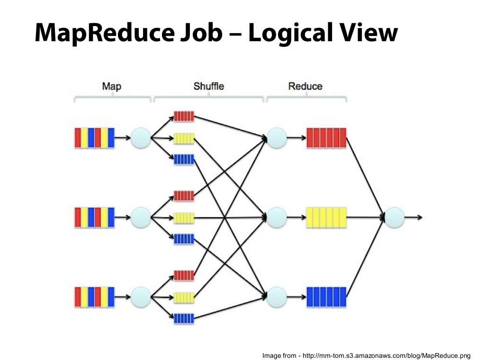

Map Reduce¶
This notebook objective is to code in Python language a wordcount application using map-reduce process. A java version is well explained on this page

credits: https://computing.llnl.gov/tutorials/parallel_comp
map function example¶
The map(func, seq) Python function applies the function func to all the elements of the sequence seq. It returns a new list with the elements changed by func
def f(x):
return x * x
rdd = [2, 6, -3, 7]
res = map(f, rdd )
res # Res is an iterator
print(*res)
from operator import mul
rdd1, rdd2 = [2, 6, -3, 7], [1, -4, 5, 3]
res = map(mul, rdd1, rdd2 ) # element wise sum of rdd1 and rdd2
print(*res)

functools.reduce example¶
The function reduce(func, seq) continually applies the function func() to the sequence seq and return a single value. For example, reduce(f, [1, 2, 3, 4, 5]) calculates f(f(f(f(1,2),3),4),5).
from functools import reduce
from operator import add
rdd = list(range(1,6))
reduce(add, rdd) # computes ((((1+2)+3)+4)+5)
p = 1
for x in rdd:
p *= x
p
def g(x,y):
return x * y
reduce(g, rdd)
p = 1
for x in rdd:
p *= x
p
Weighted mean and Variance¶
If the generator of random variable \(X\) is discrete with probability mass function \(x_1 \mapsto p_1, x_2 \mapsto p_2, \ldots, x_n \mapsto p_n\) then
where \(\mu\) is the average value, i.e.
X = [5, 1, 2, 3, 1, 2, 5, 4]
P = [0.05, 0.05, 0.15, 0.05, 0.15, 0.2, 0.1, 0.25]
Example of zip
for x, p in zip(X, P):
print(f" x = {x} ..... p = {p}")
from itertools import zip_longest
for x, p in zip_longest(X, [0.1], fillvalue=0.0):
print(f" x = {x} ..... p = {p}")
sum(P)
data = list(range(1000000))
from math import sqrt
%timeit sum(map(lambda x: 2*sqrt(x)+1, data))
%timeit sum( 2*sqrt(x)+1 for x in data)
Exercise 5.1¶
Write functions to compute the average value and variance using for loops
X = [5, 1, 2, 3, 1, 2, 5, 4]
P = [0.05, 0.05, 0.15, 0.05, 0.15, 0.2, 0.1, 0.25]
def average_variance(X, P):
mu = sum( x*p for x,p in zip(X,P))/sum(P)
sigma = (sum( x*x*p for x,p in zip(X,P)) - mu**2)/sum(P)
return mu, sigma
average_variance(X, P)
from operator import add, mul
def average_variance(X, P):
mu = reduce(add, map( mul, X,P))
sigma = reduce(add, map(lambda x,p:x*x*p, X, P) ) - mu**2
return mu, sigma
average_variance(X, P)
Exercise 5.2¶
Write functions to compute the average value and variance using
mapandreduce
Examples with filter¶
res = filter( lambda p: p > 0.1, P) # select p > 0.1
print(*res)
res = filter( lambda x: x % 3 == 0, range(15)) # select integer that can be divided by 3
print(*res)
NB: Exercises above are just made to help to understand map-reduce process. This is a bad way to code a variance in Python. You should use Numpy instead.
Wordcount¶
We will modify the wordcount application into a map-reduce process.
The map process takes text files as input and breaks it into words. The reduce process sums the counts for each word and emits a single key/value with the word and sum.
We need to split the wordcount function we wrote in notebook 04 in order to use map and reduce.
In the following exercices we will implement in Python the Java example described in Hadoop documentation.
Map - Read file and return a key/value pairs¶
Exercise 5.3¶
Write a function mapper with a single file name as input that returns a sorted sequence of tuples (word, 1) values.
mapper('sample.txt')
[('adipisci', 1), ('adipisci', 1), ('adipisci', 1), ('adipisci', 1), ('adipisci', 1), ('adipisci', 1), ('adipisci', 1), ('aliquam', 1), ('aliquam', 1), ('aliquam', 1), ('aliquam', 1), ('aliquam', 1), ('aliquam', 1), ('aliquam', 1), ('amet', 1), ('amet', 1), ('amet', 1)...
def poly( a, b, c):
return lambda x: a*x**2+b*x+c
p = poly(1,2,3)
p(2)
class Poly:
def __init__(self, a, b, c):
self.a = a
self.b = b
self.c = b
def __call__(self, x):
return self.a*x**2+self.b*x+self.c
p = Poly(1,2,3)
p(2)
from lorem import text
with open("sample.txt","w") as f:
f.write(text())
def mapper(filename):
with open(filename) as f:
data = f.read().strip().lower().replace(".", " ")
return sorted(map(lambda w:(w,1), data.split()))
mapper("sample.txt")[:10]
Partition¶
Exercise 5.4¶
Create a function named partitioner that stores the key/value pairs from mapper that group (word, 1) pairs into a list as:
partitioner(mapper('sample.txt'))
[('adipisci', [1, 1, 1, 1, 1, 1, 1]), ('aliquam', [1, 1, 1, 1, 1, 1, 1]), ('amet', [1, 1, 1, 1],...]
from collections import defaultdict
def partitioner(map_words):
d = defaultdict(list)
for w,i in map_words:
d[w].append(1)
return list(d.items())
partitioner(mapper('sample.txt'))[:10]
Reduce - Sums the counts and returns a single key/value (word, sum).¶
Exercice 5.5¶
Write the function reducer that read a tuple (word,[1,1,1,..,1]) and sum the occurrences of word to a final count, and then output the tuple (word,occurences).
reducer(('hello',[1,1,1,1,1])
('hello',5)
def reducer(w):
return w[0],len(w[1])
reducer(('hello',[1,1,1,1,1]))
Process several files¶
Let’s create 8 files sample[0-7].txt. Set most common words at the top of the output list.
from lorem import text
for i in range(1):
with open("sample{0:02d}.txt".format(i), "w") as f:
f.write(text())
import glob
files = sorted(glob.glob('sample0*.txt'))
files
Exercise 5.6¶
Use functions implemented above to count (word, occurences) by using a for loops over files and partitioned data.
from itertools import chain
from operator import itemgetter
map_files = [mapper(f) for f in files]
partitioned_data = [partitioner(map_file) for map_file in map_files]
partitioned_results = [reducer(keyvalue) for keyvalue in chain(*partitioned_data)]
results = defaultdict(int)
for w in partitioned_results:
results[w[0]] += w[1]
sorted(results.items(), key=itemgetter(1), reverse=True)
from itertools import chain
from operator import itemgetter
map_files = map(mapper, files)
partitioned_data = map(partitioner, map_files)
partitioned_results = map(reducer, chain(*partitioned_data))
results = defaultdict(int)
for w in partitioned_results:
results[w[0]] += w[1]
sorted(results.items(), key=itemgetter(1), reverse=True)
Exercise 5.7¶
This time use
mapfunction to apply mapper and reducer.